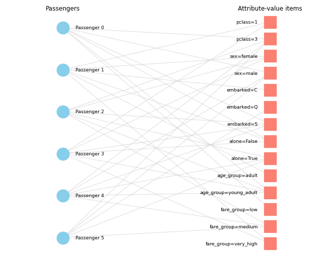
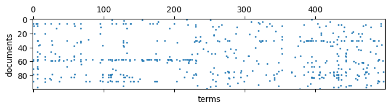
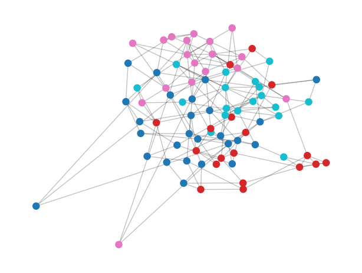
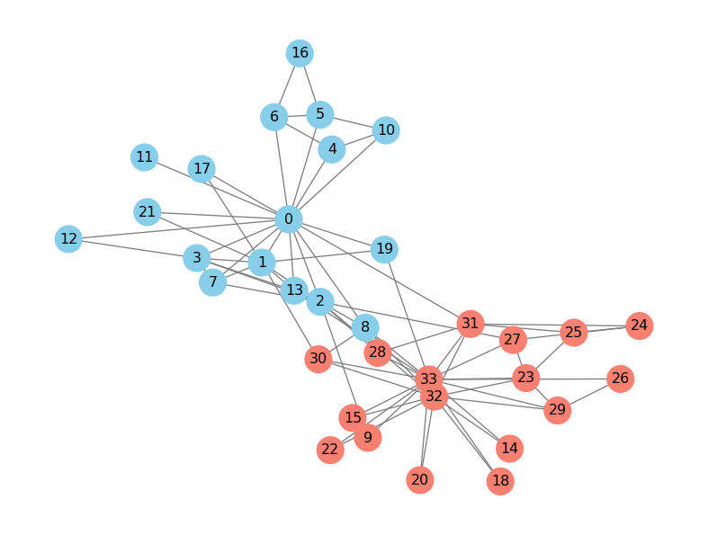
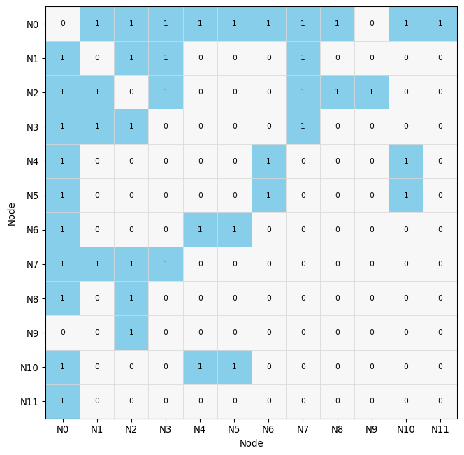
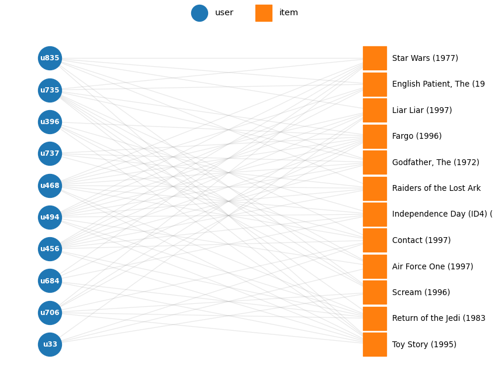
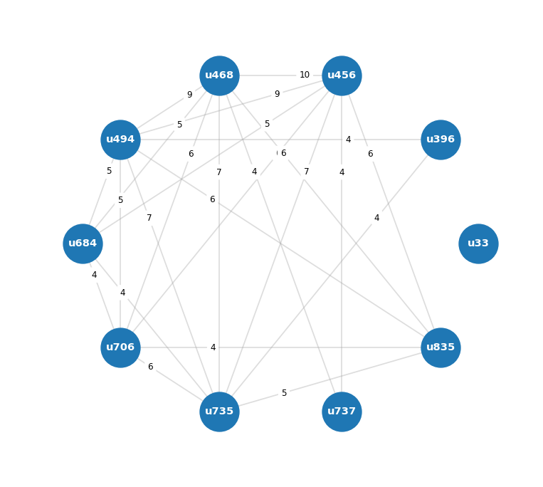
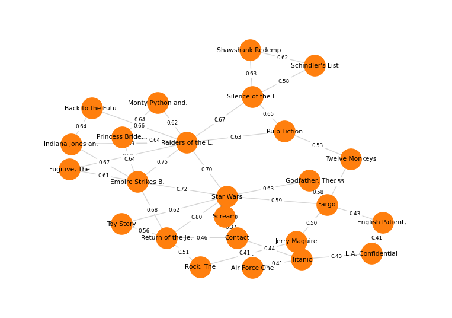
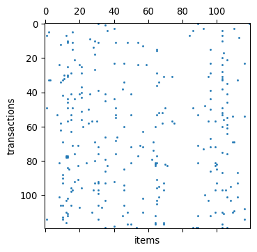
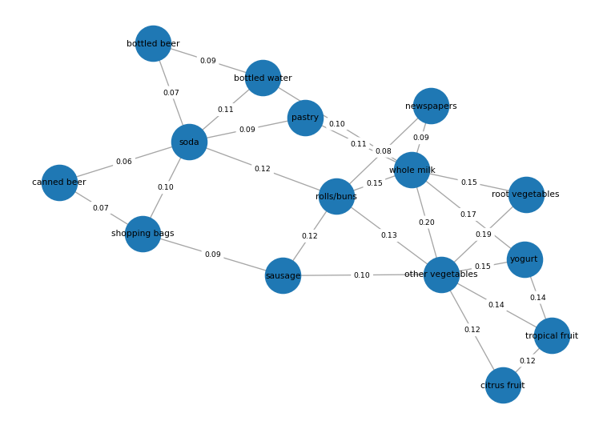

titanic = load_titanic()
type(titanic), titanic.shape(pandas.DataFrame, (891, 7))Byungkook Oh
2026.09.09
A dataset does not have only one useful representation.
In this lab, we examine how the same underlying data can be represented as records, sequences, matrices, vectors, and graphs.
Before choosing an algorithm, choose a representation.
We use the Titanic dataset to examine how the same collection of passenger records changes when we represent it differently.
| survived | pclass | sex | age | fare | embarked | alone | |
|---|---|---|---|---|---|---|---|
| 0 | 0 | 3 | male | 22.0 | 7.2500 | S | False |
| 1 | 1 | 1 | female | 38.0 | 71.2833 | C | False |
| 2 | 1 | 3 | female | 26.0 | 7.9250 | S | True |
| 3 | 1 | 1 | female | 35.0 | 53.1000 | S | False |
| 4 | 0 | 3 | male | 35.0 | 8.0500 | S | True |
The same passenger records can be represented as numerical vectors.
Categorical values such as sex, pclass, and embarked are converted into 0/1 indicators, while numerical values such as age and fare remain as numbers.
Each passenger is now represented by one row of numbers.
(pandas.DataFrame, (891, 12))| age | fare | pclass_1 | pclass_2 | pclass_3 | sex_female | sex_male | embarked_C | embarked_Q | embarked_S | alone_False | alone_True | |
|---|---|---|---|---|---|---|---|---|---|---|---|---|
| 0 | 22.0 | 7.2500 | 0 | 0 | 1 | 0 | 1 | 0 | 0 | 1 | 1 | 0 |
| 1 | 38.0 | 71.2833 | 1 | 0 | 0 | 1 | 0 | 1 | 0 | 0 | 1 | 0 |
| 2 | 26.0 | 7.9250 | 0 | 0 | 1 | 1 | 0 | 0 | 0 | 1 | 0 | 1 |
| 3 | 35.0 | 53.1000 | 1 | 0 | 0 | 1 | 0 | 0 | 0 | 1 | 1 | 0 |
| 4 | 35.0 | 8.0500 | 0 | 0 | 1 | 0 | 1 | 0 | 0 | 1 | 0 | 1 |
Think: Is this a different dataset?
No. The passengers are the same. Only their representation has changed from mixed data types to numerical values.
The same passenger can also be represented as a set of attribute-value items.
Continuous values such as age and fare are first discretized into categories.
(pandas.Series, list)0 : ['pclass=3', 'sex=male', 'embarked=S', 'alone=False', 'age_group=young_adult', 'fare_group=low']
1 : ['pclass=1', 'sex=female', 'embarked=C', 'alone=False', 'age_group=adult', 'fare_group=very_high']
2 : ['pclass=3', 'sex=female', 'embarked=S', 'alone=True', 'age_group=young_adult', 'fare_group=medium']
3 : ['pclass=1', 'sex=female', 'embarked=S', 'alone=False', 'age_group=young_adult', 'fare_group=very_high']
4 : ['pclass=3', 'sex=male', 'embarked=S', 'alone=True', 'age_group=young_adult', 'fare_group=medium']Think: What changed in this representation?
The same passenger is now represented as a set of attribute-value items instead of one row containing mixed numerical and categorical values.
The transaction representation can be converted into a binary matrix.
Each column corresponds to one possible item, and the value is 1 when the passenger has that item.
(pandas.DataFrame, (891, 19))| age_group=adult | age_group=child | age_group=senior | age_group=teen | age_group=young_adult | alone=False | alone=True | embarked=C | embarked=Q | embarked=S | fare_group=high | fare_group=low | fare_group=medium | fare_group=very_high | pclass=1 | pclass=2 | pclass=3 | sex=female | sex=male | |
|---|---|---|---|---|---|---|---|---|---|---|---|---|---|---|---|---|---|---|---|
| 0 | 0 | 0 | 0 | 0 | 1 | 1 | 0 | 0 | 0 | 1 | 0 | 1 | 0 | 0 | 0 | 0 | 1 | 0 | 1 |
| 1 | 1 | 0 | 0 | 0 | 0 | 1 | 0 | 1 | 0 | 0 | 0 | 0 | 0 | 1 | 1 | 0 | 0 | 1 | 0 |
| 2 | 0 | 0 | 0 | 0 | 1 | 0 | 1 | 0 | 0 | 1 | 0 | 0 | 1 | 0 | 0 | 0 | 1 | 1 | 0 |
| 3 | 0 | 0 | 0 | 0 | 1 | 1 | 0 | 0 | 0 | 1 | 0 | 0 | 0 | 1 | 1 | 0 | 0 | 1 | 0 |
| 4 | 0 | 0 | 0 | 0 | 1 | 0 | 1 | 0 | 0 | 1 | 0 | 0 | 1 | 0 | 0 | 0 | 1 | 0 | 1 |
The matrix has the following meaning:
Think: Is the information different from the transaction representation?
No. The item set and the binary matrix encode the same attribute-value information in two different forms.
The same transaction data can also be represented as a bipartite graph.
We create two kinds of nodes:
An edge connects a passenger to an attribute-value item that belongs to that passenger.
[('Passenger 0', 'pclass=3'),
('Passenger 0', 'sex=male'),
('Passenger 0', 'embarked=S'),
('Passenger 0', 'alone=False'),
('Passenger 0', 'age_group=young_adult'),
('Passenger 0', 'fare_group=low'),
('pclass=3', 'Passenger 2'),
('pclass=3', 'Passenger 4'),
('pclass=3', 'Passenger 5'),
('sex=male', 'Passenger 4')]passenger_nodes = [
node
for node, data in G.nodes(data=True)
if data["node_type"] == "passenger"
]
attribute_nodes = [
node
for node, data in G.nodes(data=True)
if data["node_type"] == "attribute"
]
attribute_order = [
"pclass",
"sex",
"embarked",
"alone",
"age_group",
"fare_group",
]
def attribute_key(node):
prefix = node.split("=")[0]
if prefix in attribute_order:
group = attribute_order.index(prefix)
else:
group = len(attribute_order)
return (group, node)
attribute_nodes = sorted(
attribute_nodes,
key=attribute_key,
)
pos = {}
passenger_y = np.linspace(
0.9,
-0.9,
len(passenger_nodes),
)
for y, node in zip(
passenger_y,
passenger_nodes,
):
pos[node] = (-0.5, y)
attribute_y = np.linspace(
0.95,
-0.95,
len(attribute_nodes),
)
for y, node in zip(
attribute_y,
attribute_nodes,
):
pos[node] = (0.5, y)
fig, ax = plt.subplots(
figsize=(7, 5.5)
)
nx.draw_networkx_edges(
G,
pos,
edge_color="lightgray",
alpha=0.6,
ax=ax,
)
nx.draw_networkx_nodes(
G,
pos,
nodelist=passenger_nodes,
node_size=340,
node_color="skyblue",
ax=ax,
)
nx.draw_networkx_nodes(
G,
pos,
nodelist=attribute_nodes,
node_size=340,
node_color="salmon",
node_shape="s",
ax=ax,
)
passenger_label_pos = {
node: (-0.44, pos[node][1])
for node in passenger_nodes
}
attribute_label_pos = {
node: (0.44, pos[node][1])
for node in attribute_nodes
}
nx.draw_networkx_labels(
G,
passenger_label_pos,
labels={node: node for node in passenger_nodes},
font_size=7,
horizontalalignment="left",
ax=ax,
)
nx.draw_networkx_labels(
G,
attribute_label_pos,
labels={node: node for node in attribute_nodes},
font_size=7,
horizontalalignment="right",
ax=ax,
)
ax.text(
-0.5,
1.05,
"Passengers",
ha="center",
fontsize=9,
)
ax.text(
0.5,
1.05,
"Attribute-value items",
ha="center",
fontsize=9,
)
ax.set_xlim(-0.78, 0.78)
ax.set_ylim(-1.05, 1.1)
ax.axis("off")
plt.tight_layout()
plt.show()
We use 20 Newsgroups to examine how the same text collection changes when we represent it differently.
(pandas.DataFrame, (400, 3))| doc_id | label | text | |
|---|---|---|---|
| 0 | 20ng_0000 | rec.sport.baseball | \nwondering\n -------------\n\nDo you mean ... |
| 1 | 20ng_0001 | rec.sport.baseball | Actually, there can be any number of players on a side. You can\nhave a 25-man roster, a 40-man ... |
| 2 | 20ng_0002 | comp.graphics | \n: 3DO is still a concept.\n: The software is what sells and what will determine its\n: success... |
| 3 | 20ng_0003 | rec.sport.baseball | \n\nI don't have a history handy, but I don't recall that the preponderance\nof ROY's come from ... |
| 4 | 20ng_0004 | comp.graphics | \nHallo POV-Renderers !\nI've got a BocaX3 Card. Now I try to get POV displaying True Colors\nwh... |
wondering
-------------
Do you mean Juan Berenguer? He was traded for Mark Davis in the middle
of last season. Exchanged one stiff for another, as Berenguer hadn't
come back from his injury in 91. I think he's retired now.
Anyhow, as middle relief, Marvin ain't that bad. He at least can
pitch a couple of innings or do mop-up work. I don't know much
about McMichael (was he the Mexican League guy?), but
everybody else in the pen is a 1 inning man, except maybe
Mercker.
-------------------------------------------------------
Eric Roush fierkelab@ bchm.biochem.duke.edu
"I am a Marxist, of the Groucho sort"
Grafitti, Paris, 1968
TANSTAAFL! (although the Internet comes close.)Think: What is one object in this dataset?
Each row corresponds to one document. The same object can therefore be viewed as both a record and a document.
['wondering',
'do',
'you',
'mean',
'juan',
'berenguer',
'he',
'was',
'traded',
'for',
'mark',
'davis',
'in',
'the',
'middle',
'of',
'last',
'season',
'exchanged',
'one',
'stiff',
'for',
'another',
'as',
'berenguer',
'hadn',
'come',
'back',
'from',
'his']Think: What information is preserved in a token-sequence representation?
The order of tokens is preserved, so we can still distinguish which words appear before or after others.
(scipy.sparse._csr.csr_matrix, (400, 3000))The matrix has the following meaning:
| space | image | like | good | just | don | time | data | new | 00 | |
|---|---|---|---|---|---|---|---|---|---|---|
| doc_id | ||||||||||
| 20ng_0000 | 0 | 0 | 0 | 0 | 0 | 1 | 0 | 0 | 0 | 0 |
| 20ng_0001 | 0 | 0 | 0 | 0 | 0 | 0 | 0 | 0 | 0 | 0 |
| 20ng_0002 | 0 | 0 | 0 | 0 | 0 | 0 | 0 | 0 | 0 | 0 |
| 20ng_0003 | 0 | 0 | 0 | 0 | 0 | 2 | 0 | 0 | 0 | 0 |
| 20ng_0004 | 0 | 0 | 0 | 0 | 0 | 0 | 0 | 0 | 0 | 0 |
| 20ng_0005 | 0 | 0 | 0 | 0 | 1 | 0 | 0 | 0 | 0 | 0 |

Think: Why is this matrix sparse?
Each document contains only a small subset of the entire vocabulary. Therefore, most document-term entries are zero.
(scipy.sparse._csr.csr_matrix, (400, 3000), 16025)The shape is similar to the count matrix, but the values now have a different meaning: each row is a TF-IDF document vector.
Think: Can the representation change even when the matrix shape stays the same?
Yes. The rows and columns can remain the same while the meaning of each value changes from a raw count to a TF-IDF weight.
| doc_id | label | cosine_similarity | |
|---|---|---|---|
| 271 | 20ng_0271 | rec.sport.baseball | 0.096880 |
| 79 | 20ng_0079 | rec.sport.baseball | 0.093704 |
| 289 | 20ng_0289 | rec.sport.baseball | 0.091834 |
| 138 | 20ng_0138 | rec.sport.baseball | 0.090345 |
| 323 | 20ng_0323 | rec.sport.baseball | 0.083932 |
similarity: 0.097
label: rec.sport.baseball
I'm not quite sure how these numbers are generated. It appears that in
a neutral park Bo's HR and slugging tend to drop (he actually loses two
home runs). Or do they? What is "equivalent average?"
One thing, when looking at Bo's stats, is that you can see that KC took
away some homers. Normally, you expect some would-be homers to go for
doubles or triples in big parks, or to be caught, and for that matter you
expect lots of doubles and triples anyway. But Bo, despite his speed,
hit very few doubles and not that many triples. So I would expect his
value to have risen quite considerablThink: Was this similarity stored in the original dataset?
No. It is a derived quantity created by representing documents with TF-IDF vectors and comparing them with cosine similarity.
We connect each document to its k most similar documents in the TF-IDF space.
networkx.classes.graph.Graph[(0, 79, {'weight': 0.09370361115085846}),
(0, 67, {'weight': 0.07719730486472909}),
(0, 75, {'weight': 0.07141844974621436}),
(0, 1, {'weight': 0.06130650588961917}),
(0, 7, {'weight': 0.0}),
(0, 18, {'weight': 0.0}),
(1, 28, {'weight': 0.05882035919900275}),
(1, 64, {'weight': 0.05119124894760718}),
(1, 7, {'weight': 0.0}),
(1, 18, {'weight': 0.0})]pos = nx.spring_layout(
G,
seed=RANDOM_STATE,
)
labels = [G.nodes[node]["label"] for node in G.nodes]
node_colors = pd.Categorical(labels).codes
plt.figure(figsize=(8, 6))
nx.draw_networkx_edges(G, pos, alpha=0.25)
nx.draw_networkx_nodes(
G,
pos,
node_size=70,
node_color=node_colors,
cmap="tab10",
)
plt.axis("off")
plt.show()
Think: Were these edges present in the original 20 Newsgroups dataset?
No. They are derived edges. We created them by choosing a TF-IDF representation, cosine similarity, and a k-nearest-neighbor rule.
We use Zachary’s Karate Club to examine how the same graph changes when we represent it differently.
(networkx.classes.graph.Graph, 34, 78)[(0, {'club': 'Mr. Hi'}),
(1, {'club': 'Mr. Hi'}),
(2, {'club': 'Mr. Hi'}),
(3, {'club': 'Mr. Hi'}),
(4, {'club': 'Mr. Hi'}),
(5, {'club': 'Mr. Hi'}),
(6, {'club': 'Mr. Hi'}),
(7, {'club': 'Mr. Hi'}),
(8, {'club': 'Mr. Hi'}),
(9, {'club': 'Officer'})]number of nodes: 34
number of edges: 78Think: How is a graph object described?
A node can have its own attributes, but graph data also explicitly represents connections between nodes through edges.
The graph can be visualized using nodes and edges.
Each node represents a club member, and each edge represents a relationship between two members.

Think: What information is easy to see in a graph visualization?
We can visually inspect neighborhoods, highly connected nodes, and groups of nodes that appear close together.
The same graph can be represented as a list of connected node pairs.
The table has the following meaning:
source = one endpointtarget = the other endpointThink: Does the edge list contain different graph information from the graph visualization?
No. The same connections are represented differently: a line in the visualization becomes a (source, target) pair in the table.
The same graph can also be represented by listing the neighbors of each node.
0 : [1, 2, 3, 4, 5, 6, 7, 8, 10, 11, 12, 13, 17, 19, 21, 31]
1 : [0, 2, 3, 7, 13, 17, 19, 21, 30]
2 : [0, 1, 3, 7, 8, 9, 13, 27, 28, 32]
3 : [0, 1, 2, 7, 12, 13]
4 : [0, 6, 10]
5 : [0, 6, 10, 16]
6 : [0, 4, 5, 16]
7 : [0, 1, 2, 3]
8 : [0, 2, 30, 32, 33]
9 : [2, 33]Each node is associated with the list of nodes directly connected to it.
Think: How is the same connection represented here?
If node 1 appears in the neighbor list of node 0, then nodes 0 and 1 are connected by an edge.
The same graph can also be represented as a nodes × nodes matrix.
(numpy.ndarray, (34, 34))| N0 | N1 | N2 | N3 | N4 | N5 | N6 | N7 | N8 | N9 | |
|---|---|---|---|---|---|---|---|---|---|---|
| N0 | 0 | 1 | 1 | 1 | 1 | 1 | 1 | 1 | 1 | 0 |
| N1 | 1 | 0 | 1 | 1 | 0 | 0 | 0 | 1 | 0 | 0 |
| N2 | 1 | 1 | 0 | 1 | 0 | 0 | 0 | 1 | 1 | 1 |
| N3 | 1 | 1 | 1 | 0 | 0 | 0 | 0 | 1 | 0 | 0 |
| N4 | 1 | 0 | 0 | 0 | 0 | 0 | 1 | 0 | 0 | 0 |
| N5 | 1 | 0 | 0 | 0 | 0 | 0 | 1 | 0 | 0 | 0 |
| N6 | 1 | 0 | 0 | 0 | 1 | 1 | 0 | 0 | 0 | 0 |
| N7 | 1 | 1 | 1 | 1 | 0 | 0 | 0 | 0 | 0 | 0 |
| N8 | 1 | 0 | 1 | 0 | 0 | 0 | 0 | 0 | 0 | 0 |
| N9 | 0 | 0 | 1 | 0 | 0 | 0 | 0 | 0 | 0 | 0 |
A value of 1 indicates that two nodes are connected, while 0 indicates that there is no direct edge.
The same matrix can also be visualized using color.
from matplotlib.colors import ListedColormap
n = 12
A_small = A[:n, :n]
cmap = ListedColormap([
"#F7F7F7",
"#87CEEB",
])
fig, ax = plt.subplots(
figsize=(7, 7)
)
ax.imshow(
A_small,
cmap=cmap,
vmin=0,
vmax=1,
interpolation="nearest",
)
for i in range(n):
for j in range(n):
ax.text(
j,
i,
str(A_small[i, j]),
ha="center",
va="center",
fontsize=8,
)
ax.set_xticks(range(n))
ax.set_yticks(range(n))
ax.set_xticklabels(
[f"N{i}" for i in range(n)]
)
ax.set_yticklabels(
[f"N{i}" for i in range(n)]
)
ax.set_xticks(
np.arange(-0.5, n, 1),
minor=True,
)
ax.set_yticks(
np.arange(-0.5, n, 1),
minor=True,
)
ax.grid(
which="minor",
color="#D9D9D9",
linewidth=0.6,
)
ax.tick_params(
which="minor",
bottom=False,
left=False,
)
ax.set_xlabel("Node")
ax.set_ylabel("Node")
plt.tight_layout()
plt.show()
Think: Is this different information from the graph visualization, edge list, or adjacency list?
No. The same connections are represented in matrix form.
We use MovieLens 100K to examine how the same set of user-item interactions changes when we represent it differently.
An interaction dataset records which users engaged with which items. It is observed only for events that actually happened, so the absence of an entry is ambiguous: it may mean dislike, or simply not yet seen.
The dataset is not included with this lab. Download it once from GroupLens and place it under the shared project data/ folder (data/interaction/Movielens/).
Source: https://grouplens.org/datasets/movielens/100k/
ml-100k.zip (about 5 MB). If the browser shows a security warning, choose Advanced → Proceed.data/interaction/Movielens/:data/
└── interaction/
└── Movielens/
├── u.data
├── u.item
└── u.useru.data, u.item and u.user must be directly inside Movielens (not nested as data/interaction/Movielens/ml-100k/u.data).
If the data is missing, load_movielens_100k() prints these instructions.
MovieLens is free for research and educational use, but redistribution requires separate permission — which is why you download it yourself.
| user_id | item_id | rating | timestamp | datetime | |
|---|---|---|---|---|---|
| 0 | 196 | 242 | 3 | 881250949 | 1997-12-04 15:55:49 |
| 1 | 186 | 302 | 3 | 891717742 | 1998-04-04 19:22:22 |
| 2 | 22 | 377 | 1 | 878887116 | 1997-11-07 07:18:36 |
| 3 | 244 | 51 | 2 | 880606923 | 1997-11-27 05:02:03 |
| 4 | 166 | 346 | 1 | 886397596 | 1998-02-02 05:33:16 |
Each row is one interaction: a (user, item) pair with a rating attached. This long format is often called a triple.
| item_id | title | release_date | genres | |
|---|---|---|---|---|
| 0 | 1 | Toy Story (1995) | 01-Jan-1995 | [Animation, Children's, Comedy] |
| 1 | 2 | GoldenEye (1995) | 01-Jan-1995 | [Action, Adventure, Thriller] |
| 2 | 3 | Four Rooms (1995) | 01-Jan-1995 | [Thriller] |
| 3 | 4 | Get Shorty (1995) | 01-Jan-1995 | [Action, Comedy, Drama] |
| 4 | 5 | Copycat (1995) | 01-Jan-1995 | [Crime, Drama, Thriller] |
| n_interactions | n_users | n_items | rating_values | |
|---|---|---|---|---|
| 0 | 100000 | 943 | 1682 | [1, 2, 3, 4, 5] |
rating
1 6110
2 11370
3 27145
4 34174
5 21201
Name: count, dtype: int64Think: What is one object in this dataset? Not a user, and not a movie. One row is one interaction — a pair of two different kinds of object. This is why interaction data does not fit the “one row = one object” assumption of record data.
We pivot the triples into a matrix whose rows are users and columns are items.
Let us first take a small block that we can print in full.
(10, 12)| Toy Story (1995) | Star Wars (1977) | Fargo (1996) | Independence Day | Godfather, The ( | Raiders of the L | Return of the Je | Contact (1997) | English Patient, | Scream (1996) | Liar Liar (1997) | Air Force One (1 | |
|---|---|---|---|---|---|---|---|---|---|---|---|---|
| u33 | NaN | NaN | NaN | NaN | NaN | NaN | NaN | 4.0 | NaN | 4.0 | 3.0 | 4.0 |
| u396 | 4.0 | NaN | 2.0 | 5.0 | NaN | NaN | NaN | NaN | NaN | 3.0 | NaN | 3.0 |
| u456 | 2.0 | 4.0 | 3.0 | 2.0 | 5.0 | 4.0 | 3.0 | 4.0 | 3.0 | NaN | 1.0 | NaN |
| u468 | 5.0 | 5.0 | 5.0 | 4.0 | 4.0 | 5.0 | 3.0 | 4.0 | 4.0 | NaN | 3.0 | NaN |
| u494 | 3.0 | 5.0 | 5.0 | 4.0 | 5.0 | 5.0 | 4.0 | NaN | 4.0 | NaN | 4.0 | 5.0 |
| u684 | 4.0 | 4.0 | 4.0 | 3.0 | NaN | NaN | 4.0 | NaN | NaN | NaN | NaN | NaN |
| u706 | 4.0 | 5.0 | 1.0 | NaN | NaN | NaN | 4.0 | 4.0 | NaN | 3.0 | 4.0 | NaN |
| u735 | 4.0 | 5.0 | 2.0 | NaN | 4.0 | NaN | 4.0 | 4.0 | 5.0 | 4.0 | NaN | 4.0 |
| u737 | NaN | NaN | 5.0 | NaN | 5.0 | 2.0 | NaN | 5.0 | NaN | NaN | NaN | NaN |
| u835 | 3.0 | 4.0 | NaN | NaN | 4.0 | 5.0 | NaN | NaN | 3.0 | 2.0 | 3.0 | NaN |
Every NaN is a pair we never observed. Now the full matrix:
(scipy.sparse._csr.csr_matrix, (943, 1682), 100000)The matrix has the following meaning:
Think: Why is this matrix sparse? Each user rates only a small subset of the 1,682 movies. Only 6.3% of the user-item pairs are observed, so more than 93% of the matrix is missing.
Think: Did we lose anything by pivoting? Yes. The timestamp of each interaction is no longer visible in the matrix. The same triples could instead be represented as a sequence ordered by time.
Often we only know that an interaction happened, not how much the user liked the item. We can convert the ratings into a binary “positive interaction” view.
((943, 1682), 55375)| representation | observed_entries | density | |
|---|---|---|---|
| 0 | rating (1-5) | 100000 | 0.063047 |
| 1 | binary (>= 4) | 55375 | 0.034912 |
Think: In the binary matrix, is a 0 the same as a low rating? No. A 0 means “no positive interaction observed”, which mixes together disliked, not yet seen, and seen but not rated. A 1 is a statement by the user; a 0 is the absence of a statement.
The same interactions can be viewed as a graph with two kinds of node — users and items — where an edge exists whenever a user rated an item.
(networkx.classes.graph.Graph, 22, 71)[('u33', 'i258', {'weight': 4.0}),
('u33', 'i288', {'weight': 4.0}),
('u33', 'i294', {'weight': 3.0}),
('u33', 'i300', {'weight': 4.0}),
('u396', 'i1', {'weight': 4.0})]user_nodes = [n for n, d in G.nodes(data=True) if d["bipartite"] == 0]
item_nodes = [n for n, d in G.nodes(data=True) if d["bipartite"] == 1]
pos = nx.bipartite_layout(G, user_nodes)
fig, ax = plt.subplots(figsize=(11, 8))
nx.draw_networkx_edges(G, pos, alpha=0.25, edge_color="#AAAAAA", width=1.0, ax=ax)
nx.draw_networkx_nodes(G, pos, nodelist=user_nodes, node_color="tab:blue",
node_size=900, label="user", ax=ax)
nx.draw_networkx_nodes(G, pos, nodelist=item_nodes, node_color="tab:orange",
node_size=900, node_shape="s", label="item", ax=ax)
nx.draw_networkx_labels(
G, pos,
labels={n: G.nodes[n]["label"] for n in user_nodes},
font_size=9, font_color="white", font_weight="bold", ax=ax,
)
for node in item_nodes:
x, y = pos[node]
ax.text(x + 0.10, y, G.nodes[node]["label"][:24],
fontsize=10, va="center", ha="left")
ax.legend(scatterpoints=1, fontsize=11, frameon=False, ncol=2, markerscale=0.7,
loc="lower center", bbox_to_anchor=(0.5, 1.01),
handletextpad=0.8, columnspacing=2.5)
ax.set_xlim(-1.25, 1.45)
ax.axis("off")
plt.show()
The graph and the matrix are two views of the same object. The users x items block of the adjacency matrix is called the biadjacency matrix:
| i1 | i100 | i121 | i127 | i174 | i181 | i258 | i286 | i288 | i294 | i300 | i50 | |
|---|---|---|---|---|---|---|---|---|---|---|---|---|
| u33 | NaN | NaN | NaN | NaN | NaN | NaN | 4.0 | NaN | 4.0 | 3.0 | 4.0 | NaN |
| u396 | 4.0 | 2.0 | 5.0 | NaN | NaN | NaN | NaN | NaN | 3.0 | NaN | 3.0 | NaN |
| u456 | 2.0 | 3.0 | 2.0 | 5.0 | 4.0 | 3.0 | 4.0 | 3.0 | NaN | 1.0 | NaN | 4.0 |
| u468 | 5.0 | 5.0 | 4.0 | 4.0 | 5.0 | 3.0 | 4.0 | 4.0 | NaN | 3.0 | NaN | 5.0 |
| u494 | 3.0 | 5.0 | 4.0 | 5.0 | 5.0 | 4.0 | NaN | 4.0 | NaN | 4.0 | 5.0 | 5.0 |
| u684 | 4.0 | 4.0 | 3.0 | NaN | NaN | 4.0 | NaN | NaN | NaN | NaN | NaN | 4.0 |
| u706 | 4.0 | 1.0 | NaN | NaN | NaN | 4.0 | 4.0 | NaN | 3.0 | 4.0 | NaN | 5.0 |
| u735 | 4.0 | 2.0 | NaN | 4.0 | NaN | 4.0 | 4.0 | 5.0 | 4.0 | NaN | 4.0 | 5.0 |
| u737 | NaN | 5.0 | NaN | 5.0 | 2.0 | NaN | 5.0 | NaN | NaN | NaN | NaN | NaN |
| u835 | 3.0 | NaN | NaN | 4.0 | 5.0 | NaN | NaN | 3.0 | 2.0 | 3.0 | NaN | 4.0 |
Think: Is the bipartite graph a different dataset from the utility matrix? No. The biadjacency matrix of the graph is the utility matrix, up to the ordering of rows and columns. Choosing “graph” or “matrix” changes which tools we can apply, not what the data contains.
Think: What could a bipartite graph not store? An edge connects one user to one item. If each rating also carried a tag, we would need a three-column relation (user, item, tag), because an edge cannot by itself record which tag was used on which pair.
We can fold the bipartite graph onto one side: connect two users when they rated the same item, weighted by how many items they share. Here we keep only pairs that share at least four items, so that the strongest links stand out.
[('u456', 'u468', {'weight': 10}),
('u456', 'u494', {'weight': 9}),
('u468', 'u494', {'weight': 9}),
('u456', 'u735', {'weight': 7}),
('u468', 'u735', {'weight': 7})]pos = nx.circular_layout(P)
plt.figure(figsize=(10, 9))
nx.draw_networkx_edges(P, pos, width=1.3, alpha=0.4, edge_color="#AAAAAA")
nx.draw_networkx_nodes(P, pos, node_color="tab:blue", node_size=1700)
nx.draw_networkx_labels(P, pos, font_size=11, font_color="white",
font_weight="bold")
nx.draw_networkx_edge_labels(
P, pos,
edge_labels={(u, v): d["weight"] for u, v, d in P.edges(data=True)},
font_size=9, label_pos=0.28, rotate=False,
)
plt.margins(0.14)
plt.axis("off")
plt.show()
Think: What was lost in the projection? The items. We can see that two users are similar, but the graph no longer tells us which movies they shared. Projection also destroys the bipartite structure: this graph has only one kind of node.
Instead of folding by counting shared users, we can compare item columns of the binary matrix with cosine similarity.
'Star Wars (1977)'| title | cosine_similarity | |
|---|---|---|
| 0 | Return of the Jedi (1983) | 0.801 |
| 1 | Empire Strikes Back, The (1980) | 0.715 |
| 2 | Raiders of the Lost Ark (1981) | 0.702 |
| 3 | Godfather, The (1972) | 0.634 |
| 4 | Silence of the Lambs, The (1991) | 0.617 |
| 5 | Toy Story (1995) | 0.616 |
| 6 | Indiana Jones and the Last Crusade (1989) | 0.595 |
| 7 | Princess Bride, The (1987) | 0.593 |
We connect each item to its k most similar items, restricted to the 25 most-rated movies so that every column has enough observations to compare:
(25, 41)def short_title(title):
title = title.split(" (")[0]
return title if len(title) <= 17 else title[:16] + "."
pos = nx.kamada_kawai_layout(G_items)
plt.figure(figsize=(10, 7))
nx.draw_networkx_edges(G_items, pos, width=1.0, alpha=0.5, edge_color="#AAAAAA")
nx.draw_networkx_nodes(G_items, pos, node_size=700, node_color="tab:orange")
nx.draw_networkx_labels(
G_items, pos,
labels={n: short_title(G_items.nodes[n]["title"]) for n in G_items.nodes},
font_size=8,
)
nx.draw_networkx_edge_labels(
G_items, pos,
edge_labels={(u, v): f"{d['weight']:.2f}" for u, v, d in G_items.edges(data=True)},
font_size=6.5, label_pos=0.5, rotate=False,
)
plt.margins(0.14)
plt.axis("off")
plt.show()
Think: Were these edges present in the original MovieLens data? No. MovieLens contains only user-item ratings. The item-item edges are derived: we chose a binary representation, cosine similarity, and a k-nearest-neighbor rule. A different threshold or metric would produce a different graph.
We use the Groceries transaction dataset to examine how one collection of shopping baskets can be represented in several different ways.
The dataset contains grocery transactions, where each row represents one shopping basket and contains the items purchased together.
Dataset: Groceries CSV
For market basket analysis, transactions are commonly represented as a binary transaction-item matrix, where 1 means that an item appears in a transaction and 0 means that it does not.
Place the downloaded Groceries CSV file at data/transaction/groceries.csv.
(pandas.DataFrame, (9835, 2))| transaction_id | items | |
|---|---|---|
| 0 | txn_00000 | [citrus fruit, semi-finished bread, margarine, ready soups] |
| 1 | txn_00001 | [tropical fruit, yogurt, coffee] |
| 2 | txn_00002 | [whole milk] |
| 3 | txn_00003 | [pip fruit, yogurt, cream cheese, meat spreads] |
| 4 | txn_00004 | [other vegetables, whole milk, condensed milk, long life bakery product] |
Inspect one basket directly.
Think: What is one object in this dataset?
One object is a transaction (basket), represented as a collection of items purchased together.
Each transaction can be viewed directly as a variable-length collection of items.
txn_00000 -> ['citrus fruit', 'semi-finished bread', 'margarine', 'ready soups']
txn_00001 -> ['tropical fruit', 'yogurt', 'coffee']
txn_00002 -> ['whole milk']Think: How is this different from ordinary record data?
Different transactions can contain different numbers of items, so there is no fixed set of attribute columns in the raw basket representation.
The same baskets can be expanded into a table with one row for each transaction-item occurrence.
(pandas.DataFrame, (43367, 2))| transaction_id | item | |
|---|---|---|
| 0 | txn_00000 | citrus fruit |
| 1 | txn_00000 | semi-finished bread |
| 2 | txn_00000 | margarine |
| 3 | txn_00000 | ready soups |
| 4 | txn_00001 | tropical fruit |
| 5 | txn_00001 | yogurt |
| 6 | txn_00001 | coffee |
| 7 | txn_00002 | whole milk |
| 8 | txn_00003 | pip fruit |
| 9 | txn_00003 | yogurt |
| 10 | txn_00003 | cream cheese |
| 11 | txn_00003 | meat spreads |
The same transaction_id now appears repeatedly because one transaction can contain several items.
Think: Did the underlying purchases change?
No. Only the representation changed from one row per basket to one row per transaction-item occurrence.
(scipy.sparse._csr.csr_matrix, (9835, 169))The matrix has the following meaning:
1 if the item is in the transactionView a small part of the matrix using the most frequent items.
| whole milk | other vegetables | rolls/buns | soda | yogurt | bottled water | root vegetables | tropical fruit | shopping bags | sausage | |
|---|---|---|---|---|---|---|---|---|---|---|
| transaction_id | ||||||||||
| txn_00000 | 0 | 0 | 0 | 0 | 0 | 0 | 0 | 0 | 0 | 0 |
| txn_00001 | 0 | 0 | 0 | 0 | 1 | 0 | 0 | 1 | 0 | 0 |
| txn_00002 | 1 | 0 | 0 | 0 | 0 | 0 | 0 | 0 | 0 | 0 |
| txn_00003 | 0 | 0 | 0 | 0 | 1 | 0 | 0 | 0 | 0 | 0 |
| txn_00004 | 1 | 1 | 0 | 0 | 0 | 0 | 0 | 0 | 0 | 0 |
| txn_00005 | 1 | 0 | 0 | 0 | 1 | 0 | 0 | 0 | 0 | 0 |
| txn_00006 | 0 | 0 | 1 | 0 | 0 | 0 | 0 | 0 | 0 | 0 |
| txn_00007 | 0 | 1 | 1 | 0 | 0 | 0 | 0 | 0 | 0 | 0 |
Now inspect the sparse structure visually.

Think: Why is this matrix sparse?
Each basket contains only a small subset of all available items. Therefore, most transaction-item entries are zero.
Once we have a binary transaction-item matrix, the support of an item becomes a simple summary of how frequently that item appears across transactions.
| item | count | support | |
|---|---|---|---|
| 0 | whole milk | 2513 | 0.255516 |
| 1 | other vegetables | 1903 | 0.193493 |
| 2 | rolls/buns | 1809 | 0.183935 |
| 3 | soda | 1715 | 0.174377 |
| 4 | yogurt | 1372 | 0.139502 |
| 5 | bottled water | 1087 | 0.110524 |
| 6 | root vegetables | 1072 | 0.108998 |
| 7 | tropical fruit | 1032 | 0.104931 |
| 8 | shopping bags | 969 | 0.098526 |
| 9 | sausage | 924 | 0.093950 |
Think: What does a support of 0.10 mean for an item?
It means that the item appears in 10% of all transactions.
This is the same basic notion of support used later in frequent itemset and association-rule mining. In this first lab, we stop at the representation and simple summary rather than running Apriori.
We can also represent items as a graph.
For visualization, we use the most frequent items and connect each item to its strongest co-occurring neighbors.
networkx.classes.graph.GraphInspect the graph before drawing it.
[(0, 1, {'weight': 0.2}),
(0, 4, {'weight': 0.16526694661067787}),
(0, 2, {'weight': 0.14794156706507305}),
(0, 5, {'weight': 0.10361741263028816}),
(0, 6, {'weight': 0.15496134020618557}),
(0, 10, {'weight': 0.10682783404116301}),
(0, 13, {'weight': 0.08880818752063387}),
(1, 6, {'weight': 0.18573136707851734}),
(1, 2, {'weight': 0.1272395991497115}),
(1, 4, {'weight': 0.14992977528089887})]pos = nx.spring_layout(
G_items,
seed=RANDOM_STATE,
k=1.2,
iterations=200,
weight=None,
)
node_labels = {
node: G_items.nodes[node]["item"]
for node in G_items.nodes
}
edge_labels = {
(u, v): f"{data['weight']:.2f}"
for u, v, data in G_items.edges(data=True)
}
plt.figure(figsize=(10, 7))
# Draw edges
nx.draw_networkx_edges(
G_items,
pos,
width=1.0,
alpha=0.35,
)
# Draw nodes
nx.draw_networkx_nodes(
G_items,
pos,
node_size=1100,
)
# Draw node labels
nx.draw_networkx_labels(
G_items,
pos,
labels=node_labels,
font_size=8,
)
# Draw Jaccard similarity on each edge
nx.draw_networkx_edge_labels(
G_items,
pos,
edge_labels=edge_labels,
font_size=7,
rotate=False,
)
plt.axis("off")
plt.show()
Think: Were these item-item edges explicitly stored in the original data?
No. The original data only records which items occurred in each transaction. The item-item graph is a derived representation created by aggregating co-occurrence across transactions.